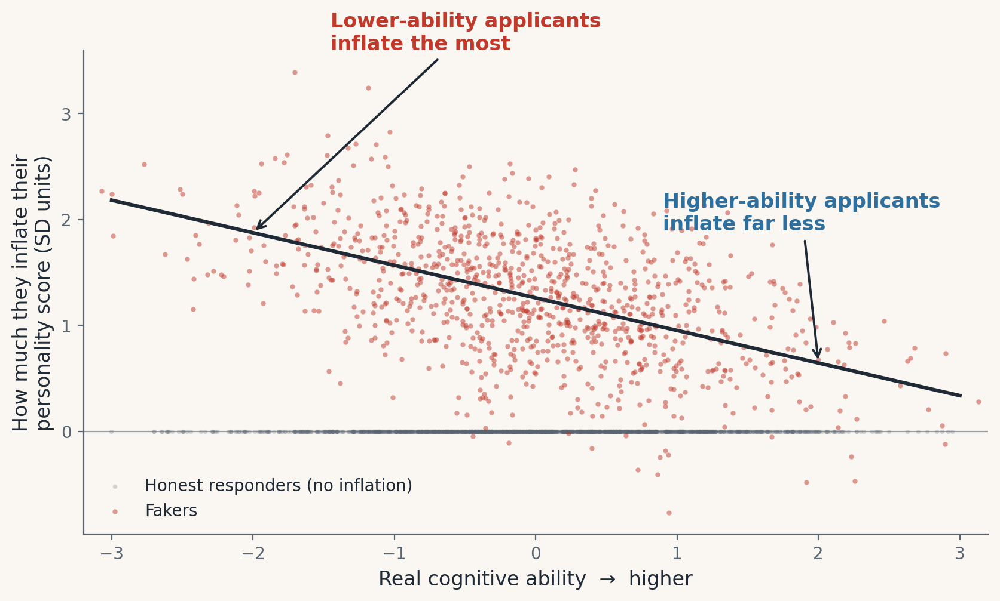

Personnel selection · Research companion
Three in ten applicants fake the personality test. It’s not the ones you’d guess.
Published within-person estimates put faking at roughly 30% of genuine applicants — up to one in two — and the applicants inflating their scores the most are the lower-ability ones. Under top-down selection they gain seats at the organization’s expense. This page lets you price that. The model behind it is a Monte Carlo simulation whose parameters are solved to reproduce published meta-analytic applicant evidence — not assumed.
1 · Who fakes: the compensatory pattern

2 · Run it on your own funnel
The model below is fit to the published evidence (applicant–incumbent mean shift d = .45, Birkeland et al., 2006; the applicant correlations above; operational validities from Sackett et al., 2022). You choose the context, how many applicants fake, how selective the hire is, and what the job pays. Every output is read from precomputed simulation runs of 400,000-applicant pools — nothing is approximated in the browser.
The Griffith & Converse (2011) synthesis concludes 30% ± 10%; within-person estimates run 30–50% (Griffith et al., 2007; Donovan et al., 2014). The manuscript's main simulations use 40%.
Dollar values are illustrative, using the convention that the standard deviation of job performance in dollars equals 40% of salary (Schmidt & Hunter, 1983). Simulation outputs, not forecasts for any specific organization.
3 · What to do about it
- Stop porting research-setting numbers into hiring decisions. Predictor intercorrelations are setting-specific. A validity model built on incumbent or research-sample correlations does not describe an applicant pool under real stakes.
- Use countermeasures even when your psychometrics look clean. In these simulations, reliabilities, means, and selection-rate statistics stay nearly undisturbed while 1 in 5 or more hiring decisions change. Verification warnings and forced-choice formats are warranted on prevention grounds, not detection grounds.
- Measure integrity directly. Inferring it from the personality composite is exactly the channel faking corrupts. In every specification that fit the published targets, applicants who gained seats through faking were lower in integrity than those they displaced — by 0.2–0.8 SD depending on the integrity measure used as anchor.
- Do not let a passed bias audit stand in for assessment health. Selection-rate impact ratios (the statistic behind NYC Local Law 144 audits) are essentially undisturbed by faking in these simulations, while the composition of who gets hired degrades.
For concrete steps — what to do this quarter and how to structure a selection system around this evidence — see the playbook.
Model inputs and assumptions
- Operational validities: cognitive ability .31, Conscientiousness .19 (Sackett, Zhang, Berry, & Lievens, 2022, Table 4). Equal-weight standardized composite, top-down selection.
- Applicant–incumbent Conscientiousness mean shift: d = .45 (Birkeland et al., 2006). Faking prevalence range: Griffith, Chmielowski, & Yoshita (2007); Donovan, Dwight, & Schneider (2014); Griffith & Converse (2011).
- For each setting of the controls, the faking parameters (mean inflation and its ability slope) are jointly re-solved so the simulated pool reproduces the mean shift and the context's applicant correlation. Consequences are measured against the no-faking counterfactual on the same simulated pool.
- Subgroup inputs for the adverse-impact ratio: d = .79 (ability; Roth et al., 2011, via Sackett et al., 2022) and −.07 (Conscientiousness; Dahlke & Sackett, 2017), minority pool share 1/6, common cutoff.
- Idiosyncratic faking noise σ = .50 (the manuscript reports sensitivity runs at .25 and 1.00).
Tools used
Python (pandas, NumPy, SciPy, statsmodels, matplotlib); Alteryx Designer Cloud; HTML, CSS, and JavaScript.